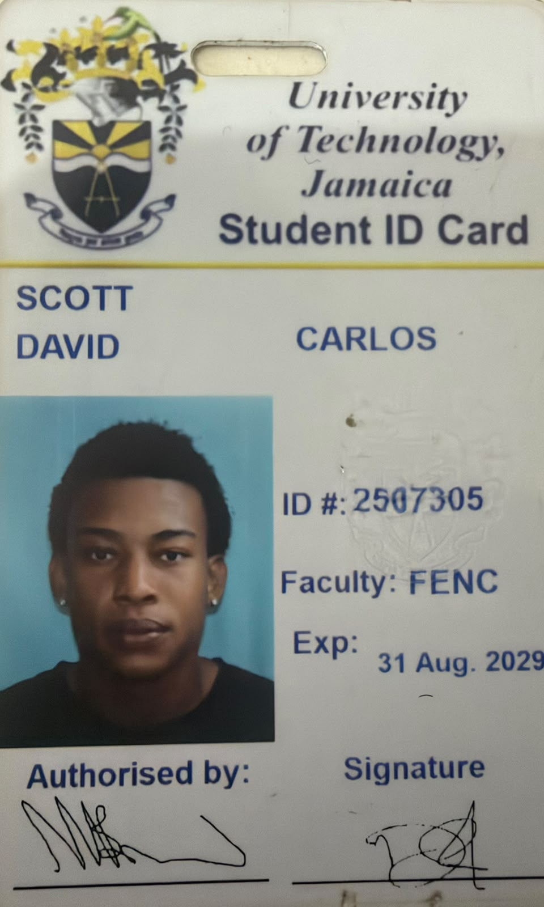

About Me
David Scott
Bachelor of Science in Computing
Year of study: Year 2
My name is David Scott, and I’m a second-year student at the University of Technology, Jamaica, pursuing a Bachelor of Science in Computing. I chose this programme because I’ve always enjoyed learning how computers work and how technology can solve everyday problems. I’m from a seaside town, and my hobbies include swimming and socializing with friends, but I will always be a gamer at heart. My goal is to improve my programming skills and become a software developer or use my knowledge of technology to start my own business.

My Resume
Education
University of Technology, Jamaica
Bachelor of Science in Computing — Year 2
Career Goal
I want to improve my programming skills and become a software developer or start my own business.
Current Learning
- Basic HTML page structure
- External CSS stylesheets
- Programming and problem solving
Future Resume
The following experience is fictional and describes the career I hope to build.
Junior Software Developer at a Jamaican Technology Company
Help build websites for local businesses, fix simple errors and work with other developers.
Personal Projects
- A student planner for tracking assignments and deadlines.
- A small business website showing products and contact information.
My Lab Assignments and Projects
- Student Profile Website — My HTML and CSS lab with an about section, courses, weekly schedule and contact form.